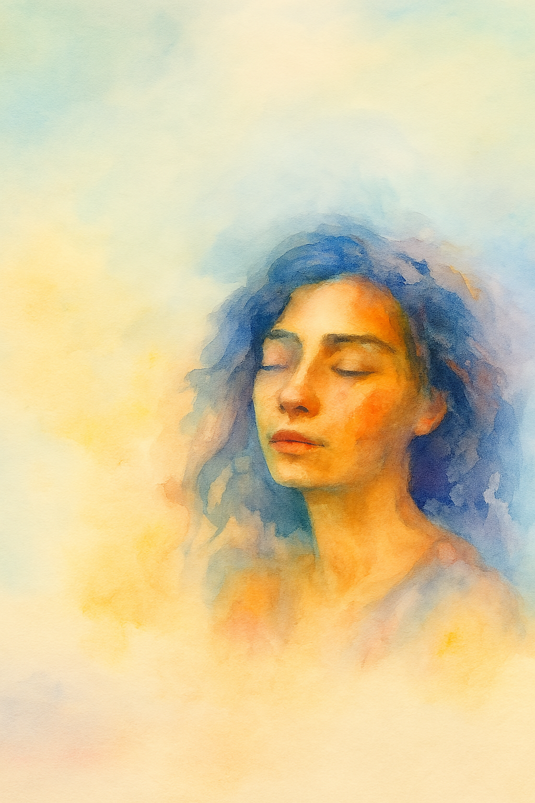

About Me
My journey through mental health has taught me that healing doesn’t always come in straight lines or quiet moments—it sometimes arrives through creation. In my darkest hours, creative expression became my refuge. Writing, music, and visual art didn’t erase the pain, but they gave it rhythm. They became the water after the storm—a calming, clarifying force that helped me reclaim parts of myself I thought were lost. Now, I carry that peace with purpose. I want to help others discover the stillness and strength that creativity can bring, guiding them to explore their own voices, to heal out loud, and to know they’re not alone. My mission is to cultivate spaces that honor both vulnerability and transformation—where expression becomes a bridge to recovery, and peace is something we find, not just alone, but together.
“Sometimes, peace arrives through messy creation.”
– Jess
In my darkest hours, creative expression became my refuge—writing, music, and visual art didn’t erase the pain, but they gave it rhythm.

Now, I carry that peace with purpose. I want to help others discover the stillness and strength that creativity can bring.
“We don’t heal by hiding. We heal by becoming the art.”